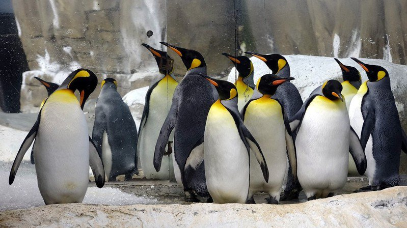

景點介紹
企鵝分布於南半球，是不會飛的水生鳥類，卻是游泳專家，在水裡潛泳可以「飛」得又快又好。現在的企鵝約有18種，有些種類一生中約有75%時間生活在海上，僅在繁殖和換羽時才登上岸。
企鵝館展示「國王企鵝」及「黑腳企鵝」。2001年9月企鵝館中的國王企鵝首度繁殖成功，孵出第一隻國王企鵝寶寶。野外的企鵝寶寶在父母的照顧下，約34-40天後加入幼鳥的群體生活，待10至13個月換羽後便可下海獨立生活。國王企鵝主要分布在南美、紐西蘭及南非南方海域等地；喜歡吃魚、磷蝦及烏賊。繁殖季時會大量聚在一起，每次只生一個蛋。通常是企鵝爸媽輪流孵蛋，待8周後企鵝寶寶孵出為止。
在觀賞可愛的企鵝之餘，也可以在企鵝館了解牠們的分布、形態特徵、生活習性及繁殖求偶行為喔！